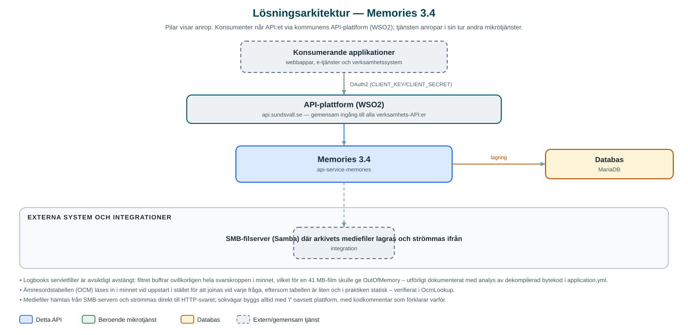

Memories
Sök- och hämttjänst för Sundsvallsminnens digitala arkiv – filmer, fotografier, ljudinspelningar, texter och publikationer.
Om API:et
Memories exponerar Sundsvallsminnens digitala kulturarvsarkiv som ett API. Tjänsten ger sök- och hämtfunktioner för fem materialtyper – filmer, fotografier, ljud, texter och publikationer – med metadata som titel, ämnesord och topografisk plats, så att webbplatser och applikationer kan visa arkivets innehåll för allmänheten.
Metadata ligger i en MariaDB-databas medan själva mediefilerna hämtas från en SMB-filserver (Samba) och strömmas direkt till anroparen. Fotografier finns i två varianter, miniatyr och stor bild, och filmer strömmas med stöd för HTTP Range-anrop så att uppspelning kan starta mitt i filen.
Sökningen är paginerad och endast material som markerats som publicerat i databasen lämnas ut. Ämnesord (OCM) och topografiska platser slås upp via små referenstabeller som läses in i minnet vid uppstart.
Det här gör API:et
- Sökning i arkivet – Paginerad sökning per materialtyp (film, foto, ljud, text, publikation) med fritextmatchning mot titel och beskrivning.
- Metadata per objekt – Detaljvy med titel, ämnesord (OCM), topografisk plats och relaterade objekt.
- Bildvarianter – Fotografier levereras som miniatyr eller stor bild, hämtade från olika undermappar på filservern.
- Filmströmning med Range-stöd – Filmer strömmas Range-medvetet så att spelaren kan hoppa i filmen utan att ladda hela filen.
- Endast publicerat material – Sökningar och listningar omfattar bara objekt som markerats som publicerade i arkivdatabasen.
API-dokumentation
API:ets samtliga resurser, parametrar och datamodeller finns beskrivna i en OpenAPI-specifikation som är hämtad ur källkodsförrådet. Den kan utforskas interaktivt i Swagger UI eller laddas ner som YAML.
Teknisk dokumentation
Nedan beskrivs hur tjänsten är uppbyggd, vilka andra tjänster den anropar och vad som krävs för att driftsätta den. Informationen är härledd ur källkoden och dess konfiguration på GitHub.
Arkitektur

API:et är en mikrotjänst (Java 25, Spring Boot via kommunens gemensamma tjänsteplattform dept44 (8.0.8), byggd med Maven). Konsumenter når tjänsten via kommunens gemensamma API-plattform (WSO2) på api.sundsvall.se – tjänsten anropas aldrig direkt. Lagring: MariaDB med Flyway-migrationer; arkivets metadata, ämnesord (OCM), topografi och publiceringsstatus. Övriga integrationer som förekommer i koden: SMB-filserver (Samba) där arkivets mediefiler lagras och strömmas ifrån.
Teknikstack
- Språk: Java 25
- Ramverk: Spring Boot via kommunens gemensamma tjänsteplattform dept44 (8.0.8), byggd med Maven
- Databas: MariaDB med Flyway-migrationer; arkivets metadata, ämnesord (OCM), topografi och publiceringsstatus
- Övrigt: jcifs-ng för SMB-åtkomst till filservern, strömmande filleverans direkt till HTTP-svaret
Beroenden till andra mikrotjänster
Inga anrop till andra mikrotjänster hittades i källkodens konfiguration.
Konfiguration och driftsättning
- SMB-anslutning: värd, port, share, autentisering samt mappar per materialtyp
- MariaDB-anslutning till arkivets metadatabas; schemat versionshanteras med Flyway
- Logbook-payloadloggning är helt avstängd i denna tjänst (se anteckningar)
- Anrop görs per kommun – municipalityId ingår i alla API-vägar
Noterbart ur källkoden
- Logbooks servletfilter är avsiktligt avstängt: filtret buffrar ovillkorligen hela svarskroppen i minnet, vilket för en 41 MB-film skulle ge OutOfMemory – utförligt dokumenterat med analys av dekompilerad bytekod i application.yml.
- Ämnesordstabellen (OCM) läses in i minnet vid uppstart i stället för att joinas vid varje fråga, eftersom tabellen är liten och i praktiken statisk – verifierat i OcmLookup.
- Mediefiler hämtas från SMB-servern och strömmas direkt till HTTP-svaret; sökvägar byggs alltid med '/' oavsett plattform, med kodkommentar som förklarar varför.
- Tjänsten anropar inga andra kommun-API:er – integrationslagret består av databasen och SMB-filservern.
Källkod
Källkoden är öppen och finns hos Sundsvalls kommun på GitHub. I källkodsförrådet finns även instruktioner för att klona, konfigurera och starta tjänsten i egen miljö.